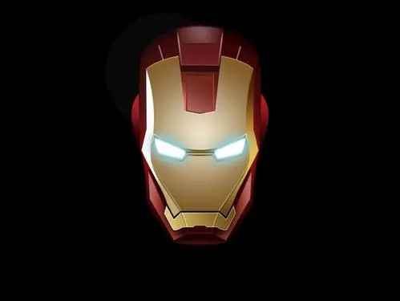
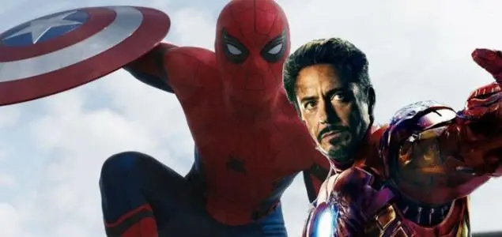
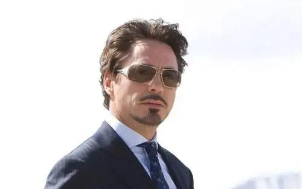
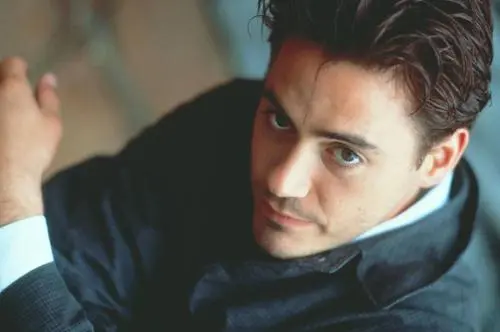
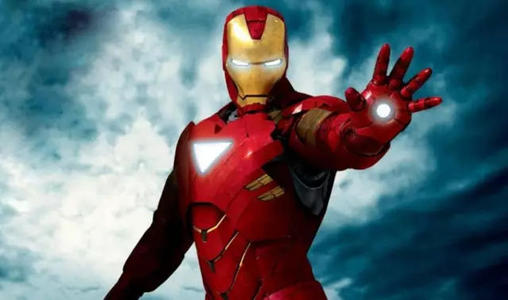
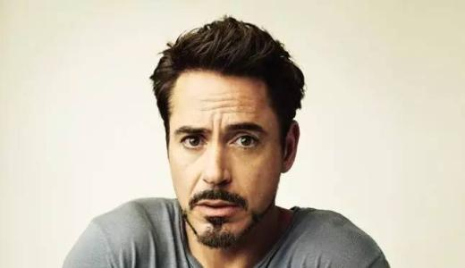

「罗伯特唐尼」
1965年4月4日出生于美国纽约，美国演员、歌手、监制。2008年，唐尼在漫改电影《钢铁侠》中首次饰演“钢铁侠”托尼·史塔克。

「钢铁侠」
钢铁侠（Iron Man）是美国漫威漫画旗下的超级英雄。

「创作背景」
钢铁侠是由漫威漫画公司的数位作者联合创作的，包括编辑兼编剧斯坦·李、编辑赖瑞·理柏、负责绘制早期钢铁侠故事的画家唐·赫克，以及设计第一套钢铁侠装甲并绘制首次亮相的封面底稿的杰克·科比。

「人物原型」
赫克设计出托尼·斯塔克与其秘书佩珀·波茨的面容。斯坦·李参照霍华德·休斯设计出斯塔克的个性，他解释说：“霍华德·修斯是我们这个时代中最多姿多彩的人物之一。他是位发明家、冒险家、亿万富豪、花花公子，还是个疯子。”

「设备设施」
来自于他穿着的先进动力装甲。由方舟反应炉提供能量，赋予斯塔克超人力量及飞行能力。
装甲还可以吸收周遭的能源如热量与动能并转化成电力，甚至可以直接吸收电力来为电池进行充电。
斯塔克还加装了喷射推进器足以让他拖着一整列火车前进。除此之外，装甲还可以完全的与外界隔离，让斯塔克可在太空或海底行动，具备内建的维生系统，并可隔绝放射线。

「能力设定」
钢铁侠在与利用绝境病毒强化后的敌手麦伦（Mallen）交战后受到重伤，斯塔克将改造过后的生化科技病毒注入自己的神经系统。称为绝境改造（Extremis Process）。不但救了自己一命，还将装甲与自己的肉体融合在一起。这让他可以将钢铁侠装甲的内层储存在自己骨骼中空的部份，并可利用脑部的思绪直接进行控制。
斯塔克可以控制自己皮肤下的装甲内层，让装甲由四肢上数个出口显现出来，在皮下形成金色的神经界面。当史塔克进入此状态时，他可以以感应远端控制铁甲装，而且即使装甲在一百英里远处外斯塔克仍可在任何时候着装。